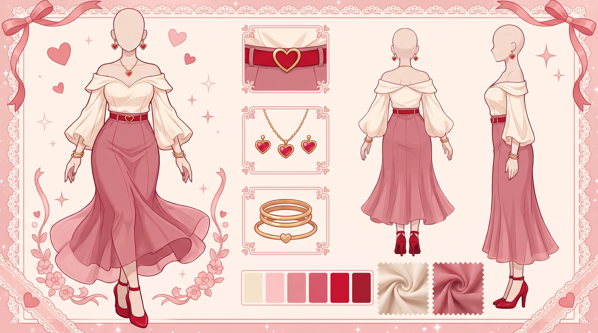
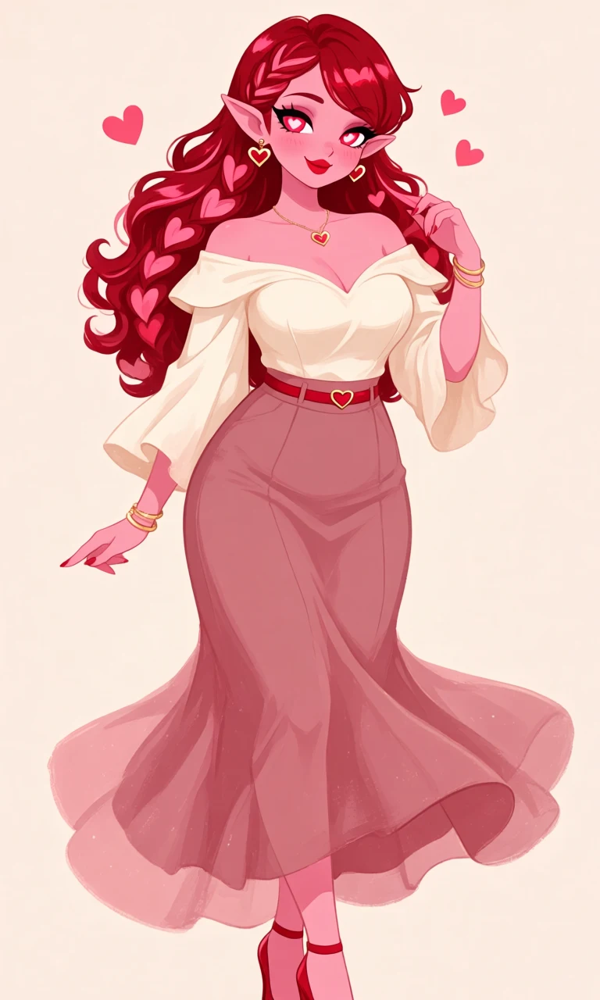
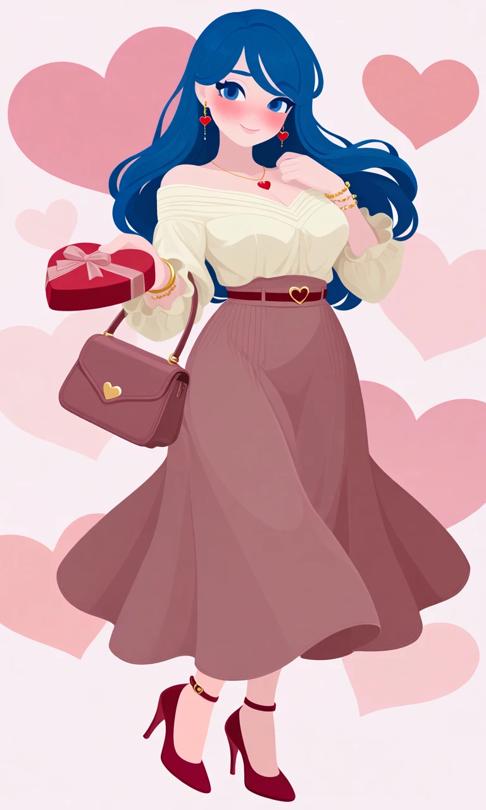

Be Mine at Dusk

Outfit Prompt
Romantic modern feminine outfit, elegant casual date fashion, soft affectionate aesthetic, coordinated cream, dusty rose, deep red, and gold color palette.
A soft cream-colored off-the-shoulder blouse with a sweetheart neckline, gently gathered fabric across the bust, and delicate shaping around the waist. The blouse features long flowing sleeves with loose romantic silhouettes, softly gathered shoulders, and narrow elastic cuffs creating gentle ruffles at the wrists. Lightweight chiffon-like fabric with a subtle silky texture. The blouse is tucked neatly into the skirt.
A high-waisted dusty-rose midi skirt with a fitted waistband and a gently flowing A-line silhouette, ending at mid-calf. Soft lightweight fabric falls in graceful folds, creating natural movement without excessive volume. Delicate subtle pleats begin beneath the waistband.
A thin deep-red leather belt worn around the waist, featuring a small polished gold heart-shaped buckle at the center.
Elegant deep-red heels with slender ankle straps, softly pointed toes, and delicate medium-height heels. Small gold buckles fasten the ankle straps.
Delicate gold drop earrings featuring small red enamel hearts suspended from thin gold chains.
A dainty gold necklace with a small polished red heart pendant resting just below the collarbone.
Several elegant gold bracelets, including a thin chain bracelet with tiny heart charms, a delicate pearl bracelet, and a narrow polished gold bangle.
A small dusty-rose handbag with a structured rounded silhouette, short handle, and a tiny gold heart clasp.
Romantic feminine styling, soft flowing fabrics, graceful silhouettes, delicate heart-shaped accessories, affectionate modern fashion, elegant yet comfortable casual date outfit.
Outfit Examples



